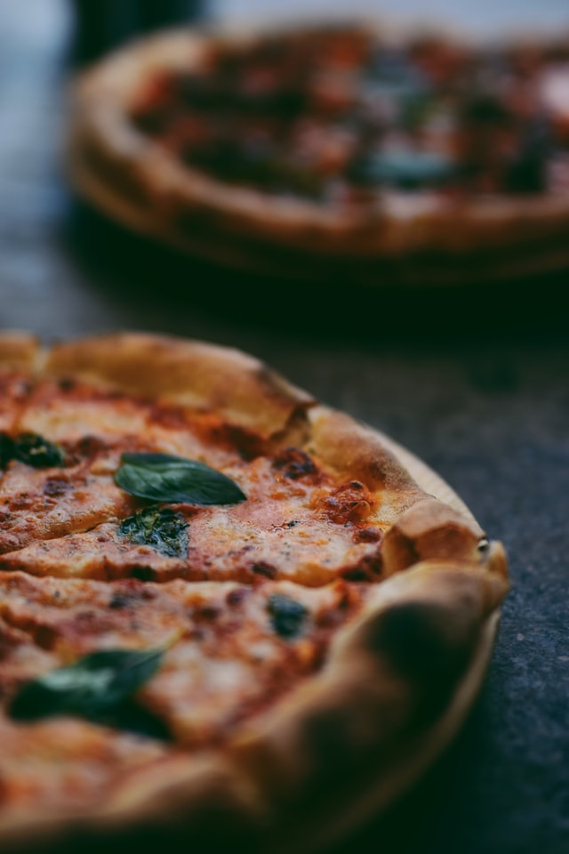

Pizza carbonara

Ready to go pizza
Pizza is a dish of Italian origin consisting of a usually round, flat base of leavened wheat-based dough topped with tomatoes, cheese, and often various ...
Ingredients
- Flour
- water
- yeast
- cheese
- bacon
- mushrooms
- garlic
- eggs
Steps
- Prepare your crust according to the recipe (or grab your store-bought dough out from the fridge).
- Preheat your oven (use a pizza stone if you have one for that REAL pizzeria taste).
- Cook the bacon until crisp, then remove to a towel-lined plate to cool.
- Discard all but 2 teaspoons of the bacon fat from the skillet, then add the mushrooms and saute until tender. Remove from heat.
- Roll and stretch the pizza dough to your desired size and thickness.
- Sprinkle the dough with the mozzarella, half of the Parmesan, bacon, and mushrooms.
- Make small wells in the center of the toppings and crack in the eggs
- Sprinkle with the remaining Parmesan, then bake until the crust is golden, the cheese is melted and bubbly, and the eggs are almost (but not quite) cooked all the way through.
- Remove, let stand a few minutes, then sprinkle with black pepper and fresh parsley. ENJOY!